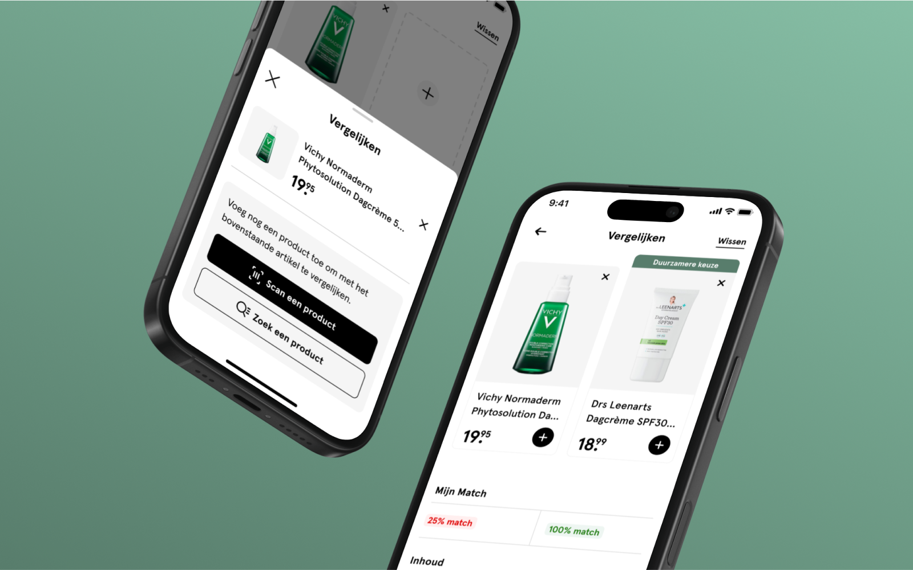

Etos Mijn Match
Mijn Match is een omnichannel oplossing die klanten van Etos ondersteunt bij het vinden van producten die écht bij hun persoonlijke voorkeuren en behoeften passen.
De opdracht
Etos-klanten worden steeds kritischer op de producten die zij aanschaffen. Zo is er een steeds sterkere behoefte aan transparantie en duidelijke informatie over bijvoorbeeld de samenstelling en duurzaamheid van producten. Etos is daarom op zoek naar een omnichannel oplossing die klanten kan ondersteunen bij het vinden van een passend product. Vanuit deze uitdaging is de volgende centrale design challenge geformuleerd: Hoe kan met behulp van een digitaal interactief product worden gezorgd dat klanten van Etos tijdens hun online of offline winkelervaring extra advies ontvangen, zodat zij een weloverwogen keuze kunnen maken op basis van hun behoeften?
Het proces
Gedurende een periode van 18 weken heb ik het volledige Design Thinking-proces doorlopen: van het verkennen van de gebruikersbehoeften tot het iteratief ontwikkelen en testen van prototypes. Allereerst zijn door middel van surveys, interviews en deskresearch diepgaande inzichten verzameld rondom de wensen en gedragingen van de doelgroep. Deze inzichten zijn onder andere vertaald naar een persona, om een duidelijk beeld te creëren voor wie er uiteindelijk ontworpen wordt. Zo blijkt dat de doelgroep vaak moeite heeft met een passend product te vinden tussen het grote aanbod, graag zouden ze zonder zelf veel tijd kwijt te zijn willen achterhalen welke producten nou écht goed aansluiten bij hun wensen.
Na het verzamelen van deze belangrijkste inzichten ben ik gaan kijken naar mogelijke oplossingsrichtingen. Dit heb ik gedaan door zelf te brainstormen, maar ook door in de praktijk verschillende bestaande oplossingen te bekijken en te analyseren (benchmark). Zo kreeg ik een goed beeld van wat al werkt in de markt en welke kansen er nog liggen voor Etos.
Op basis hiervan is uiteindelijk één concept gekozen dat het beste aansloot bij zowel de behoeften van de klant als de wensen van Etos. Met dit concept ben ik vervolgens heel iteratief aan de slag gegaan: eerst met wireframes, daarna met meerdere versies van een interactief prototype. Tussentijds zijn deze steeds verbeterd op basis van gebruikersfeedback. Hierbij heb ik onder andere usability tests uitgevoerd en stakeholders binnen Etos nauw betrokken bij de doorontwikkeling, zodat het eindresultaat zowel gebruiksvriendelijk als haalbaar in de praktijk is.
Het resultaat
Het eindresultaat is Mijn Match: een digitale tool binnen de Etos app die klanten helpt om op een persoonlijke en toegankelijke manier de juiste productkeuze te maken. In een korte onboarding geeft de gebruiker voorkeuren aan, deze input vormt de basis voor een gepersonaliseerd profiel.
In de winkel kan de gebruiker met de productscanner eenvoudig de barcode van een product scannen. De app opent dan direct de bijbehorende productdetailpagina, waarop de gebruiker uitgebreide informatie kan vinden. Wanneer de gebruiker al de onboardingsvragen van Mijn Match heeft ingevuld, wordt deze informatie nog toegankelijker gemaakt. Zo verschijnt er een dynamisch ‘match-label’ (bijv. ‘75% match’) dat in één oogopslag laat zien in hoeverre het product aansluit op de persoonlijke voorkeuren. Wanneer een product niet volledig voldoet aan het profiel van de gebruiker, worden automatisch alternatieven getoond die beter ‘matchen’.
Twijfelt de gebruiker nog? Dan is er tot slot nog de mogelijkheid om producten toe te voegen aan een productvergelijker, waarin ze overzichtelijk naast elkaar worden gezet. De gebruiker kan dan eenvoudig verschillen en overeenkomsten vergelijken op aspecten zoals prijs, duurzaamheid en ingrediënten. De oplossing zorgt op deze manier voor gemak, overzicht en vertrouwen bij het kiezen van een geschikt product dat écht past bij de persoonlijke wensen van de klant.
 Bekijk volgend project